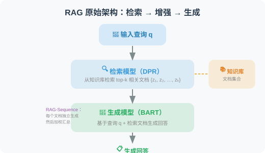
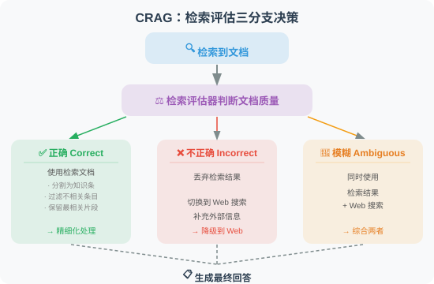
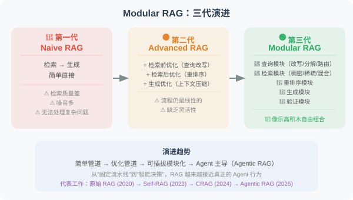
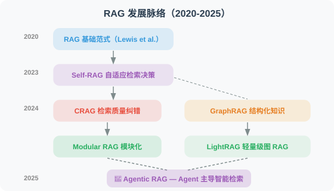

7.6 论文解读：RAG 前沿进展
📖 "RAG 是过去两年发展最迅猛的技术方向之一。"
从朴素 RAG 到 Agentic RAG，本节深入解读推动这一演进的核心论文。
RAG 原始论文：一切的起点
论文：Retrieval-Augmented Generation for Knowledge-Intensive NLP Tasks
作者：Lewis et al., Meta AI (Facebook AI Research)
发表：2020 | arXiv:2005.11401
核心问题
预训练语言模型将知识隐式地编码在参数中，存在三个问题：
- 无法轻松更新知识（需要重新训练）
- 对罕见和长尾知识的覆盖不足
- 无法追溯知识来源
方法原理
RAG 的原始方案是端到端训练检索模型和生成模型：

论文提出了两种变体：
- RAG-Sequence：每个文档独立生成完整回答，然后对所有回答加权
- RAG-Token：在生成每个 Token 时，都可以参考不同的文档
与今天实践的区别
虽然今天的 RAG 实现方式与原始论文有很大不同（我们通常不做端到端训练，而是将检索和生成解耦），但核心思想完全一致：让模型在生成回答时能够参考外部知识。
| 维度 | 原始 RAG (2020) | 现代 RAG (2024-2025) |
|---|---|---|
| 检索模型 | DPR（端到端训练） | 通用嵌入模型（如 OpenAI text-embedding-3） |
| 生成模型 | BART | GPT-4o / Claude 等 |
| 训练方式 | 端到端联合训练 | 解耦（检索和生成独立） |
| 向量数据库 | FAISS | ChromaDB / Pinecone / Weaviate |
Self-RAG：自适应检索
论文：Self-RAG: Learning to Retrieve, Generate, and Critique through Self-Reflection
作者：Asai et al.
发表：2023 | arXiv:2310.11511
核心问题
传统 RAG 的一个根本缺陷是：对每个问题都执行检索。但实际上：
- 有些问题模型本身就能回答，检索反而引入噪音
- 有些问题需要多次检索，一次检索不够
- 检索到的文档质量参差不齐，需要筛选
方法原理
Self-RAG 训练模型生成四种反思标记（Reflection Tokens）：
1. [Retrieve]：是否需要检索？
→ "Yes" / "No" / "Continue"（继续生成，稍后再检索）
2. [IsRel]：检索到的文档是否相关？
→ "Relevant" / "Irrelevant"
3. [IsSup]：生成的内容是否有文档支持？
→ "Fully Supported" / "Partially Supported" / "No Support"
4. [IsUse]：生成的回答是否有用？
→ 1-5 的评分
工作流程
用户提问："Python 3.12 有什么新特性？"
↓
模型思考 → [Retrieve: Yes]（需要检索，因为这是时效性信息）
↓
检索 → 返回文档
↓
模型评估 → [IsRel: Relevant]（文档相关）
↓
生成回答
↓
模型自检 → [IsSup: Fully Supported]（回答有文档支持）
[IsUse: 5]（回答有用）
对 Agent 开发的启示
Self-RAG 的自适应检索思想可以直接应用于 Agent 开发：
- 不是所有请求都需要 RAG：Agent 应该先判断是否需要检索
- 检索质量验证：检索到文档后要评估相关性，不盲目使用
- 生成质量自检：回答生成后要验证是否有文档支持
CRAG：检索结果的纠错机制
论文：Corrective Retrieval Augmented Generation
作者：Yan et al.
发表：2024 | arXiv:2401.15884
核心问题
传统 RAG 的另一个痛点是：检索到低质量文档时怎么办？
- 向量相似度高不一定意味着真正相关
- 检索到的文档可能过时、片面或有错误
- 一旦注入了低质量上下文，LLM 的回答质量也会下降
方法原理
CRAG 引入了一个轻量级的检索评估器，根据检索质量采取不同策略：

对 Agent 开发的启示
- 检索不是终点：检索到文档后还需要质量评估和过滤
- 降级策略：当内部知识库不够时，可以降级到 Web 搜索
- 精细化处理：大段文档中可能只有几句话是相关的，需要提取关键信息
GraphRAG：知识图谱增强的 RAG
论文：From Local to Global: A Graph RAG Approach to Query-Focused Summarization
作者：Edge et al., Microsoft Research
发表：2024 | arXiv:2404.16130
核心问题
传统 RAG 检索的是独立的文本块（Chunk），适合回答局部问题（"X 是什么？"），但难以回答全局问题（"这个项目中所有团队之间的合作关系是什么？"、"整个文档集合的主要主题有哪些？"）。
方法原理
GraphRAG 在传统 RAG 的基础上增加了知识图谱层：
索引阶段：
1. 文本分块 → 常规的文本 Chunk
2. 实体和关系提取 → 用 LLM 从文本中提取实体（人物、组织、概念）和关系
3. 构建知识图谱 → 实体为节点，关系为边
4. 社区检测 → 对图进行层次化聚类（Leiden 算法）
5. 社区摘要 → 为每个社区生成描述性摘要
查询阶段（两种模式）：
- Local Search：从与查询最相关的实体出发，遍历其邻居关系
- Global Search：使用社区摘要回答全局性问题（Map-Reduce 方式）
实验结果
在全局性问题（需要理解整个文档集合）上，GraphRAG 比朴素 RAG 的回答质量提升了 30-70%。
对 Agent 开发的启示
- 结构化知识的价值：纯文本检索在关系推理方面有天然局限，知识图谱可以弥补
- 分层检索策略：局部问题用向量检索，全局问题用图检索
- 索引成本：GraphRAG 的索引阶段需要大量 LLM 调用来提取实体和关系，成本较高
Modular RAG：模块化 RAG 架构
论文：Modular RAG: Transforming RAG Systems into LEGO-like Reconfigurable Frameworks
作者：Gao et al.
发表：2024
核心贡献
Modular RAG 不是一个具体的方法，而是一个系统化的分类框架，将 RAG 系统的演进分为三个阶段：

RAG 范式演进总结
| 范式 | 特点 | 代表工作 |
|---|---|---|
| Naive RAG | 检索 → 生成，简单直接 | 原始 RAG (Lewis et al., 2020) |
| Advanced RAG | 检索前优化 + 检索后优化 | 本书第 7.4 节 |
| Modular RAG | 模块化、可插拔、自适应 | Self-RAG, CRAG |
| Agentic RAG | Agent 主导检索决策，支持多轮检索 | LangGraph + RAG 工作流 |
LightRAG：轻量级图增强 RAG
论文：LightRAG: Simple and Fast Retrieval-Augmented Generation
作者：Guo et al., 香港大学
发表：2024 | arXiv:2410.05779
核心问题
GraphRAG（微软）虽然通过知识图谱提升了全局问题的回答能力，但存在严重的成本和效率问题：
- 索引阶段需要大量 LLM 调用，Token 消耗巨大
- 社区检测和摘要生成耗时长
- 新增文档需要重新构建整个图
方法原理
LightRAG 在保持图增强优势的同时大幅降低成本：
GraphRAG 的代价：
索引 1000 篇文档 → 可能需要 $50-100 的 LLM 调用费
新增 10 篇文档 → 需要重建整个社区结构
LightRAG 的改进：
1. 简化实体/关系提取（减少 LLM 调用次数）
2. 双层检索机制：
- 低层检索：基于具体实体和关系的精确检索
- 高层检索：基于主题和概念的抽象检索
3. 增量更新：新文档只需提取新实体并合并到已有图中
成本对比：
GraphRAG: $100+ / 1M Token 索引
LightRAG: $5-10 / 1M Token 索引（10-20x 降低）
关键发现
- 图结构 + 双层检索：在多个数据集上同时优于 GraphRAG 和朴素 RAG
- 增量更新能力：可以在不重建图的情况下添加新文档，适合动态知识库
- 成本大幅降低：索引和检索成本相比 GraphRAG 降低 10-20 倍
对 Agent 开发的启示
对于需要 RAG 能力的 Agent，LightRAG 提供了比 GraphRAG 更实用的选择——在保持图增强优势的同时，大幅降低了部署和运维成本。特别适合知识库频繁更新的场景。
RAG 与推理的融合：Agentic RAG
综述：Agentic RAG: Boosting the Generative AI Capabilities with Autonomous RAG
趋势综述：多篇论文（2024-2025）
核心概念
Agentic RAG 不是一篇单独的论文，而是 2024-2025 年 RAG 领域最重要的演进方向——将 RAG 从"被动管道"升级为"Agent 主导的智能检索"：
传统 RAG（被动管道）：
用户提问 → 检索 → 生成 → 返回
（固定流程，一次检索，不管够不够）
Agentic RAG（Agent 驱动）：
用户提问 → Agent 思考
↓
"这个问题需要检索吗？" → 否 → 直接回答
↓ 是
"用什么查询检索？" → 改写查询
↓
检索 → "检索结果够好吗？"
↓ 不够
"换个查询方式/数据源再试"
↓ 够了
"需要更多信息吗？" → 是 → 继续检索
↓ 否
综合所有信息 → 生成回答
↓
"回答有事实支撑吗？" → 自我验证 → 返回
关键技术组件
| 组件 | 学术来源 | 功能 |
|---|---|---|
| 自适应检索 | Self-RAG (2023) | 判断是否需要检索 |
| 检索纠错 | CRAG (2024) | 评估检索质量并降级 |
| 查询改写 | HyDE, Query Rewriting | 优化检索查询 |
| 多源检索 | Modular RAG (2024) | 动态选择数据源 |
| 迭代检索 | IRCoT (2023) | 多轮检索逐步深入 |
| 推理整合 | LangGraph Workflows | 将检索嵌入推理循环 |
对 Agent 开发的启示
Agentic RAG 是 2025 年 Agent 开发中最实用的架构模式之一。LangGraph 是实现 Agentic RAG 的理想框架（详见第 12 章）——可以将检索决策、查询改写、质量评估等步骤编排为状态图中的节点。
论文对比与发展脉络
| 论文 | 年份 | 解决的核心问题 | 关键创新 |
|---|---|---|---|
| RAG 原始论文 | 2020 | LLM 知识有限 | 检索+生成的融合 |
| Self-RAG | 2023 | 何时需要检索 | 反思标记自适应 |
| CRAG | 2024 | 检索质量不稳定 | 检索评估器 + 降级策略 |
| GraphRAG | 2024 | 全局性问题难以回答 | 知识图谱 + 社区摘要 |
| Modular RAG | 2024 | RAG 系统缺乏灵活性 | 模块化架构框架 |
| LightRAG | 2024 | GraphRAG 成本过高 | 轻量级图索引 + 增量更新 |
| Agentic RAG | 2025 | RAG 流程缺乏智能 | Agent 主导检索决策 |
发展脉络：

💡 前沿趋势（2025-2026）：RAG 领域的三大趋势：① Agentic RAG 成为主流：不再是简单的"检索→生成"管道，而是 Agent 动态决策检索策略、查询改写、多源切换、结果验证的完整推理循环；② 图增强 RAG 走向实用：LightRAG 等轻量方案解决了 GraphRAG 的成本问题，让图增强 RAG 可以在生产环境大规模部署；③ RAG + 推理模型：o3/R1 等推理模型与 RAG 的结合正在被探索——推理模型可以更智能地分解检索需求、评估检索质量。
返回：第7章 检索增强生成